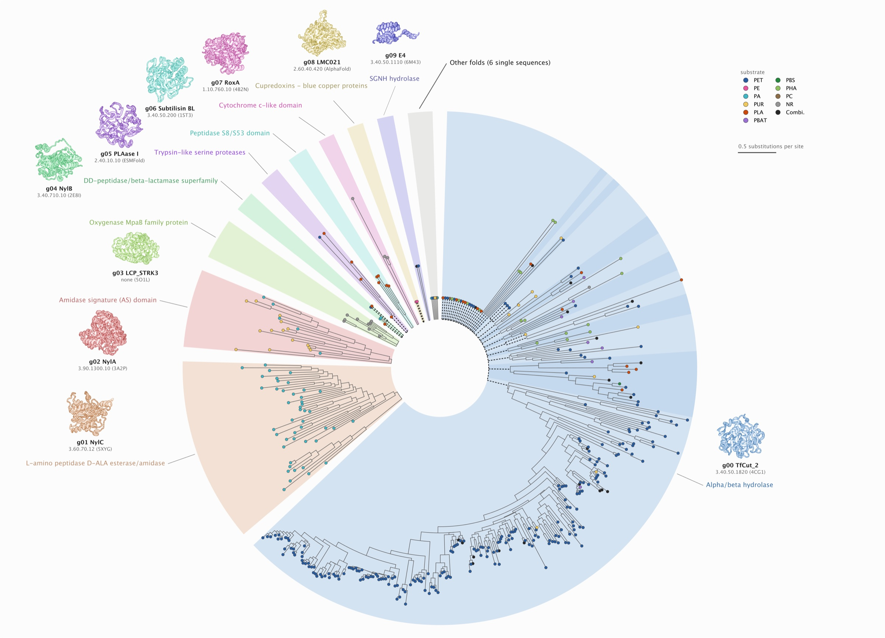

CATH Assignment
Before using the plasticome to search for new enzymes, we checked what kinds of proteins it contains. We gave every enzyme a structural label from CATH, a database that sorts protein domains into families by their 3D fold.
Each enzyme was labelled three independent ways: by comparing its predicted structure with known structures, by matching its sequence against CATH sequence models, and by matching it against Pfam protein families. The structure search and the sequence search against CATH agree on every domain they both label. The plasticome is dominated by the α/β-hydrolase fold shared by IsPETase and LCC, followed by a smaller group of peptidases and amidases.
### CATH Assignment in src/content/wiki/dry-lab/model/index.mdx.
- Every passage on both pages is marked no manuscript text, drafted for the wiki, except the Figure 1 caption, which is manuscript, hand-written.
petadex-manuscript.texis not on watson, so no sentence here could be checked against it or attributed to it. Before publishing, compare against the manuscript's plasticome-domain paragraphs and re-mark any sentence that matches. - The manuscript gap list (
~/manuscript-README.md, D4) says the Results text credits domain assignment to "InterProScan" and gives "15 distinct protein domains". InterProScan was not run for this. The page credits the three routes that were run. The 15 does match: the final table has 15 distinct catalytic CATH superfamilies (Figure 5, Methods), and the Lcp family is a 16th domain name with no CATH code. Make the manuscript and the wiki say the same thing. - Every number comes from
~/plasticome-cath-assignment/results/throughextract_data.py. Reference of record is CATH v4.3.0.
Figure 1. The plasticome as a forest of fold groups
Click the figure to open it full size. Pick a fold group below to list its enzymes in the plasticome explorer.

petadex-manuscript/figures/figure2c_plasticome-forest.png (Supplementary Fig. 1), copied into this folder's assets/ as a 2400 px JPEG plus the full PNG. The caption merges Results ¶5 (hand-written) with the Supplementary Fig. 1 caption, whose .tex carries no AI-GENERATED marker; confirm it is hand-written. The tree README reports 4 of 33 backbone branches at UFBoot 95 (3 recovered independently); the manuscript says 2 of 33. The caption follows the manuscript; reconcile before publishing. Fold groups under the figure come from logan-plasticome-figure/tree/runs/centroids/results/fold_table.tsv.
The fold-group buttons link to the 01 plasticome explorer with that fold group selected (#fold=g01).01 plasticome (tab "Domain calls"), which reads this folder's data.json.The domain calls for every enzyme can be browsed in the plasticome explorer, under "Domain calls".
Read the full assignment methods →CATH Assignment: Methods
dry-lab/model/plasticome/: frontmatter path: "/dry-lab/model/cath-assignment/", order: 23, reached only from the link at the end of the overview. Facts follow obsidian-vault/PETadex/Projects/Plasticome CATH Assignment/ and the repo README. Counts in tables and figures come from ~/plasticome-cath-assignment/results/.
- Source key: no manuscript text, drafted for the wiki (the manuscript was not available; see the note on the overview).
Why assign CATH
The plasticome was assembled from published papers, one enzyme at a time. A fold label for every enzyme is a check on the whole set: it shows whether the set contains the kinds of proteins we expect, and makes outliers easy to find.
CATH classifies protein domains, the independently folding units of a protein, not whole chains. Each domain gets a four-part code: Class (mainly α, mainly β, or α–β), Architecture, Topology, and Homologous superfamily. For example, 3.40.50.1820 is the α/β-hydrolase superfamily. We label at the superfamily level, the full four-part code, and do not go further into CATH's functional families. Superfamilies that share their first three numbers, such as 3.40.50.200 (subtilisin-like proteases) and 3.40.50.1820, are different superfamilies and are reported separately.
Because CATH works on domains, every enzyme must first be cut into domains. A multidomain enzyme with different codes on different domains is a normal result, not a disagreement.
Three independent routes
We labelled every domain in more than one way, so that agreement between methods tells us how far to trust each label. A single method gives a label but no way to judge it.
Figure 2. From 609 structures to one CATH label per domain
The routes run on all 609 structures. Counts are domains unless marked.
| Route | Evidence | Reference | Output |
|---|---|---|---|
| A | Structure | CATH S40, a curated set of 31,885 non-redundant CATH domains | CATH superfamily per Merizo domain |
| A′ | Structure | TED50, 77.7 million domains cut from AlphaFold models | CATH superfamily per Merizo domain, where TED has one |
| B | Sequence | Gene3D, 66,720 profile HMMs built from CATH superfamilies | CATH superfamily per resolved HMM hit |
| C | Sequence | Pfam-A 38.2, 30,134 families | Pfam family and clan (not a CATH code) |
Routes A and B are the core design: one reads the structure, the other the sequence, and they share nothing but the CATH classification itself. Routes A′ and C were added after the first run, each to answer a specific question raised by its results (see TED50 and Pfam).
Inputs and references
The input is one predicted structure per plasticome enzyme: 609 ESMFold models, single chain, with per-residue confidence (pLDDT) in the B-factor column. Each file also contains the full sequence, so Route B reads its sequences from the same files and nothing has to be matched up between a FASTA and a structure. Sequences run from 28 to 734 residues (median 313). Residues are numbered 1 to L in both routes. Because the numbering is shared, domains from different routes can be compared residue by residue.
| Component | Version used | Notes |
|---|---|---|
| CATH S40 (Route A) | v4.3.0, September 2019 | Reference of record. Re-checked against v4.4.0 (Validation). |
| TED50 (Route A′) | Foldseek databases TED50, AlphaFold DB v4, built February 2025 | The only TED release published |
| Gene3D (Route B) | v21.0.1 (CATH v4.3.0), July 2019 | Newest available. Gene3D has not been rebuilt since. |
| Pfam-A (Route C) | 38.2, January 2026 | Current release |
| Merizo | commit c7dbbd1 | Domain segmentation |
| Foldseek | master build 7f4b946 (July 2026) | See Reproducing |
| HMMER / cath-resolve-hits | 3.4 / v0.16.10 |
Cutting structures into domains
Each structure was cut into domains with Merizo, a deep-learning domain segmenter, run with iterative segmentation on CPU. Merizo reads only PDB format, so the mmCIF files were first converted with gemmi. This gave domains across the 609 structures.
Of these, are discontinuous: one domain built from two or more separate stretches of sequence, usually because another domain is inserted into it. Every later step treats a domain as a set of residues, not a start and end, so these are handled correctly.
Structures by number of Merizo domains.
n_res column is a span (end − start + 1), not a residue count, so it overstates the size of the 280 discontinuous domains (72_dom2: 162 residues, n_res 392). No figure on this page uses it, but don't quote domain sizes from that column.Route A: structure search against CATH
Each Merizo domain was searched against CATH S40 with Foldseek easy-search, keeping up to 300 hits per domain. The search keeps every hit, and the thresholds are applied afterwards, so cutoffs can be revisited from the data. A domain takes the superfamily of its best hit that passes both:
- TM-score ≥ 0.5, the usual threshold for two structures sharing a fold, and
- E-value ≤ 10−5.
These are the thresholds our team uses for its TED50 domain annotation, so that the two analyses can be compared. of the domains received a call.
--alignment-type 1), but its E-values there are not calibrated. On our test set, a hit at TM ≈ 0.94 scored E ≈ 0.9 in TM-align mode and E ≈ 10−30 in the default 3Di+AA mode. With an E-value cutoff, TM-align mode would silently throw away real assignments. All Route A searches use the default mode.Route A′: the same search against TED50
CATH S40 is small and curated. The Encyclopedia of Domains (TED) applies CATH labels to domains cut from the whole AlphaFold Database, so it is far broader. After the first run left 24 structures without a call, we repeated Route A's search against TED50, TED clustered at 50% identity. The search reused the same Merizo domains and thresholds. Only the reference changed.
Each TED50 entry carries its CATH label in its name, for example AF-A0A005-F1-model_v4_TED02 CATH3.40.50.2000_RES225-381. The label is a full superfamily, a topology only (three levels), no-hit or NOVEL. Only a full four-level superfamily counts as a call. The rest are kept as a "nearest known neighbour" note. This gave domains with a superfamily, compared with from CATH S40.
The search took 8 minutes 47 seconds on 64 threads at a peak of 193.5 GB of memory, so memory, the expected obstacle, was not a problem.
Figure 3. Where the E-value cutoff sits
All TED50 hits with TM-score ≥ 0.5, binned by E-value. Hover a bar for the count.
| E-value cutoff (TM ≥ 0.5) | Domains with a superfamily |
|---|
results/route_a_ted50/foldseek/aln.tsv (all HSPs, not just the best per domain). The vault describes the noise mode as sitting "near E ≈ 1". On this binning the dip is at 10−6 to 10−5 and the second mode peaks around 10−3. Check against ted50_tm_evalue_calibration.png before keeping either wording.Route B: sequence search against Gene3D
Gene3D is CATH's own library of profile hidden Markov models, one or more per superfamily. We followed the official Gene3D scan recipe exactly, including its thresholds:
hmmsearch -Z 10000000 --domE 0.001 --incdomE 0.001 main.hmm plasticome.faa
cath-resolve-hits --input-format hmmsearch_out \
--min-dc-hmm-coverage=80 --worst-permissible-bitscore 25
cath-resolve-hits resolves overlapping HMM hits into one non-overlapping set of domains per sequence. Each resolved hit is then mapped to its superfamily through Gene3D's model-to-family table. This gave domains across sequences. Eleven models had no superfamily in the table. They were flagged, not dropped.
Each route keeps its own thresholds. Route B does not use Route A's 10−5. Gene3D's settings were calibrated by its authors for exactly this task, and Foldseek E-values and HMMER domain E-values are not on the same scale. The routes are compared on the label they produce, not on matching thresholds.
Reconciling the routes
Merizo and Gene3D cut proteins into domains independently, and their boundaries rarely match exactly. Before two labels can be compared, we have to decide when two domains are "the same domain". Overlap is measured on residue sets, so a discontinuous domain counts only the residues it actually contains. The rule uses the labels themselves:
- Same superfamily: a match if the overlap covers at least half of the smaller domain (min-based overlap ≥ 0.5). This tolerates the routes cutting at different granularity. Merizo often splits one Gene3D domain in two.
- Different superfamily: a disagreement only if the overlap covers at least 70% of both domains (reciprocal overlap ≥ 0.7). A weaker overlap between different labels means two different domains that happen to touch, not two labels for one domain.
| Tier | Meaning | Domains |
|---|
Figure 4. Two structures the overlap rule has to handle
Merizo domains (top lane) and Gene3D domains (bottom lane), drawn to scale along the sequence. Colour is CATH class. Hover a block for its superfamily.
3.40.710.10) is split around an inserted α-helical domain (1.20.58.710, TM 0.999). Gene3D's sequence models cannot represent an insertion and tile the region with two β-lactamase hits. The body agrees, and the insertion is a structure-only finding. Structure 410: Gene3D finds a small 51-residue trefoil domain (2.80.10.50) inside the region Merizo leaves as one α/β-hydrolase domain. Different folds with little reciprocal overlap: two domains, not a conflict.We arrived at this rule after trying two simpler ones on the same data. Every apparent disagreement each one produced was reviewed by hand.
| Matching rule | Agree | Disagree | What went wrong |
|---|---|---|---|
| Intersection over the smaller domain, any label | 641 | 4 | Insertions and nested domains (structures 52, 604, 410) read as conflicts |
| Reciprocal overlap, any label | 618 | 2 | Split 56 same-fold agreements into one-route calls when Merizo cut finer than Gene3D |
| Label-aware rule (used) | 643 | 0 | No same-fold splits. Every remaining case reviewed |
results/crosscheck/summary.txt prints "overall agreement among matched domains: 77.6%". That number is AGREE over all 829 comparisons, including one-route domains. Among matched domains it is 643/643 = 100%. The wiki uses 100% and says "matched". Fix the label in crosscheck.py.Route C: Pfam
After Routes A, A′ and B, eleven cluster centroids still had no label. One was MGS0084 (see below). The other ten were the whole of one component, C024: 15 structures (11 distinct sequences, 10 centroids) that all superpose on each other at TM ≥ 0.89. A whole family without a single hit looked at first like a candidate new fold.
It is not new. A BLASTp search identifies it in one step as the latex clearing protein (Lcp), a rubber oxygenase with a solved crystal structure (PDB 5O1L, 2017). The cause was the reference: CATH has never assigned Lcp a superfamily. Route A's reference is CATH, and Route B's Gene3D models are built from CATH, so a family missing from CATH is invisible to both. Running either more sensitively would not have helped.
Route C asks a database built independently of CATH. Every sequence was searched against Pfam-A with each family's own curated gathering threshold:
hmmsearch --cut_ga --domtblout plasticome.pfam.domtbl Pfam-A.hmm plasticome.faa
Each hit is placed on the Merizo domain it overlaps (min-based overlap ≥ 0.5) and tagged with its Pfam clan, a group of families that share an ancestor. All 15 Lcp structures hit PF09995 MPAB_Lcp_cat, the weakest at nearly twice the gathering threshold (bit score 43.2 against 23). Across the full set Pfam made domain calls on of 609 structures.
Pfam is also an independent check on the CATH routes, because its clans line up with CATH superfamilies:
| Pfam clan | Enzymes | CATH superfamily | Enzymes |
|---|---|---|---|
| AB_hydrolase (CL0028) | 453 | 3.40.50.1820 α/β-hydrolase | 463 |
| Trefoil (CL0066) | 57 | 2.80.10.50 trefoil | 56 |
| DmpA_ArgJ | 52 | 3.60.70.12 L-aminopeptidase / D-Ala esterase-amidase | 53 |
For Lcp, Pfam places PF09995 in the Globin clan, and TED50 had independently given the same domains the globin-like topology 1.10.490 but no superfamily. So CATH has the fold but no superfamily for this family. We report that as supporting evidence only. A clan is not a CATH superfamily, so the Lcp catalytic CATH code stays empty.
How the routes compare
Enzymes (of 609) with at least one call from each route.
Across the Merizo domains, the three CATH routes and Pfam give:
| Outcome per Merizo domain | Domains | Enzymes |
|---|
TED50 adds calls and never contradicts. Comparing CATH S40, TED50 and Gene3D per structure: agree, gain an extra domain from TED50 (for example an Ig-like domain on several α/β-hydrolases), have a call TED50 misses, and none conflict. TED50's misses are mostly heme-binding all-α proteins (the RoxA and RoxB rubber oxygenases, which Gene3D labels as cytochrome c-like 1.10.760.10).
The four conflicts are one question of granularity. All four are nylon hydrolases (structures 318, 325, 335 and 342). On the same Merizo domain, CATH S40 and Gene3D give 3.60.70.12, while TED50 gives 3.30.365.10 or 3.30.2330.10 at a higher TM-score (0.97–0.99 against 0.80–0.84). TED appears to be matching a sub-domain of the larger fold. Pfam settles it: all four carry Peptidase_S58 in clan DmpA_ArgJ, which corresponds to 3.60.70.12.
3.30.365.10 ×3, 3.30.2330.10 ×1) as an accessory domain on these four rows, because the centroid call is the union of A, A′ and B. That contradicts the "Pfam settles it" sentence. Either drop the TED-only label from accessory-cath for these rows or soften the sentence. The repo README also calls the 572 / 13 / 20 / 4 split "per domain". It is per enzyme. The per-domain counts are in the table above.The final table
The per-route calls become one CATH annotation per plasticome enzyme in three steps.
1. One call per cluster centroid. The plasticome was clustered at 90% identity into centroids. A centroid's call is the union of the superfamilies from Routes A, A′ and B. Pfam is kept as a separate annotation. of centroids are assigned.
| Routes contributing | Centroids |
|---|
One centroid, MGS0084, gets its call from a second, more sensitive pass. Its structure has no hit from any route at the standard thresholds. Foldseek in TM-align mode, with E-values ignored, finds an α/β-hydrolase domain at TM 0.777 and 0.794 in its two independent copies, with ≥ 0.89 coverage. We accepted this call because it meets three conditions together: high TM-score, high coverage on both sides, and the same label across independent copies. The same pass also returned TM ≥ 0.5 "hits" for the Lcp domains, but 14 near-identical N-terminal domains came back with 12 different superfamilies. A real homologue would give the same label every time. These were rejected, because TM ≈ 0.5–0.7 alone does not discriminate all-α folds.
2. Transfer to all 609 enzymes. Each enzyme takes the call of the centroid its sequence matches:
| Transfer | Rule | Enzymes |
|---|
3. Catalytic and accessory domains. Within each graph component from Component Assignment, the superfamilies carried by every member are the catalytic core. Anything on only some members is accessory: carbohydrate-binding modules, propeptides, Ig-like and trefoil domains. This rule cannot separate the two in a component of one member, so eight components were assigned by hand, each from the superfamily's role elsewhere in the dataset and the enzyme's identity. For example, the PLAT/C2-like domain of porcine pancreatic lipase is the colipase-binding domain, not the catalytic one. of components carry an identical CATH string on every member.
Superfamilies CATH leaves unnamed take the name of their parent topology, marked "[topology]", so a parent name is never presented as a superfamily name. The Lcp component is named from Pfam ("oxygenase MpaB family protein") with its CATH columns left empty. The only other empty row is a 28-residue fragment (Arylacylamidase), too short to annotate.
cath_assigned (hence 400/411), but the final union table includes it (hence 401 and only the Lcp component empty). The page describes that as a deliberate acceptance. Confirm that's the wording you want.Figure 5. The folds of the plasticome
Validation
Against the original PETadex annotations
The original PETadex seed set (pazy-240826) carried one hand-assigned CATH code per enzyme. We matched its sequences to the new structures with DIAMOND (≥ 99% identity, ≥ 90% coverage for "same protein") and compared.
| Outcome | Enzymes |
|---|
The calls agree on 186 of 191 comparable enzymes (97.4%). All five disagreements are errors in the old annotation: five subtilisin-family proteases, including Proteinase K, were labelled α/β-hydrolase (3.40.50.1820). Both new routes independently place them in the subtilase superfamily 3.40.50.200, which is correct for these enzymes. The new pipeline also labels five enzymes the old set left blank, including the rubber oxygenases RoxA, RoxB and LatA (1.10.760.10).
Against a newer CATH release
The reference of record, CATH v4.3.0, dates from 2019. To test whether any result depends on that, we rebuilt Route A's reference from CATH v4.4.0 (December 2024) and re-ran it on the same Merizo domains, so every difference comes from the reference.
| Domain, v4.3.0 → v4.4.0 | Domains |
|---|
No call changed superfamily. All six gains repeat calls TED50, Gene3D and Pfam had already made. The one loss, a Proteinase K propeptide, sat just inside the cutoff (E = 7.3 × 10−6) and is still called by TED50 and Gene3D. The final table does not change. CATH v4.4.0 adds 101,090 domains but no new superfamilies: its additions are automatic assignments into existing ones. A newer CATH could raise sensitivity but could not have supplied a label the 2019 release lacked. Lcp's two PDB structures (5O1L, 5O1M) are on CATH v4.4.0's list of chains still waiting to be classified.
Limitations
- Labels only for what CATH has classified. Three of the four routes depend on CATH. A family CATH has not classified, like Lcp, can only be named by Pfam. No CATH label does not mean a new fold.
- Superfamily level only. We do not assign CATH functional families, and a CATH code says nothing about substrate or activity.
- All-α domains are hard to place. Structural similarity alone is weak evidence for helical bundles. TED50 misses the heme-binding rubber oxygenases, and the sensitive pass gave incoherent labels for Lcp.
- Predicted structures. All structures are ESMFold models, not experimental structures.
- Route B cannot be updated. Gene3D has not been rebuilt since CATH v4.3.0.
Reproducing
The pipeline is a config-driven repository. Every tool and reference version is pinned in config/versions.sh. The two-route core runs from one driver:
bash scripts/setup_tools.sh all # Foldseek, cath-resolve-hits, Merizo bash scripts/setup_databases.sh all # CATH S40, Gene3D (TED50, Pfam optional) bash run.sh all # structures -> Route A -> Route B -> cross-check bash scripts/route_c_01_pfam.sh # Route C python scripts/route_c_02_parse.py python scripts/annotate_three_routes.py # per-enzyme and per-domain tables
The TED50 pass, the CATH v4.4.0 audit and the transfer to the final table are run by hand in the order listed in the repository README.
7f4b946) that can't be downloaded again; setup now installs the nearest tagged release, so structural hits may shift slightly. (2) Structures are read from a private S3 bucket. (3) Where the final unified table will live (RDS or S3) is still open. Add the GitHub link once the repo is public.